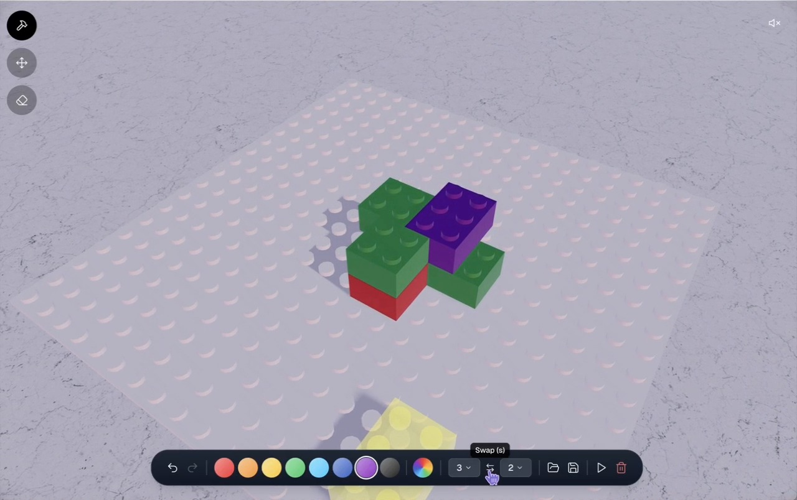

屏幕 → 世界坐标
相机转动后，仍要命中正确的凸点和表面。固定屏幕热点无法通过。
VIDEO → CODE → RUNNING APPLICATION
3D Brick Studio：从二维演示推断三维几何、编辑状态和交互规则，交付真正可运行的积木编辑网站。
输入来自 WebCompass video-generation #78。公开样例的派生开发题；不是独立未见测试集。
查看给模型的任务说明 ↗
01 / OBSERVABLE EVIDENCE
1280 × 804 · 30 fps · 原视频未修改 · 音轨全零静音
02 / WHY THIS IS HARD
相机转动后，仍要命中正确的凸点和表面。固定屏幕热点无法通过。
宽深交换、顶面高度、遮挡和删除影响后续操作；几个预制画面不足以复现。
编辑、展示、擦除和模态框各有语义。返回编辑后，作品和工具需要继续正确工作。
未演示的文件保存、撤销/重做、单块移动、声音和云协作不计功能分。取消清空的语义在公开任务中明确给出。
03 / EVIDENCE-BASED CHECKLIST
点击条目展开原子断言。功能按 0/1 判定；视觉按固定锚点判定。两名匿名 judge 独立评分，分歧须复核，缺证据不自动计零。
04 / CALIBRATION STATUS
四模型均尚未运行。本页展示案例设计，不能据此得出分数、排名或“已经压分成功”的结论。
DESIGN PACKAGE